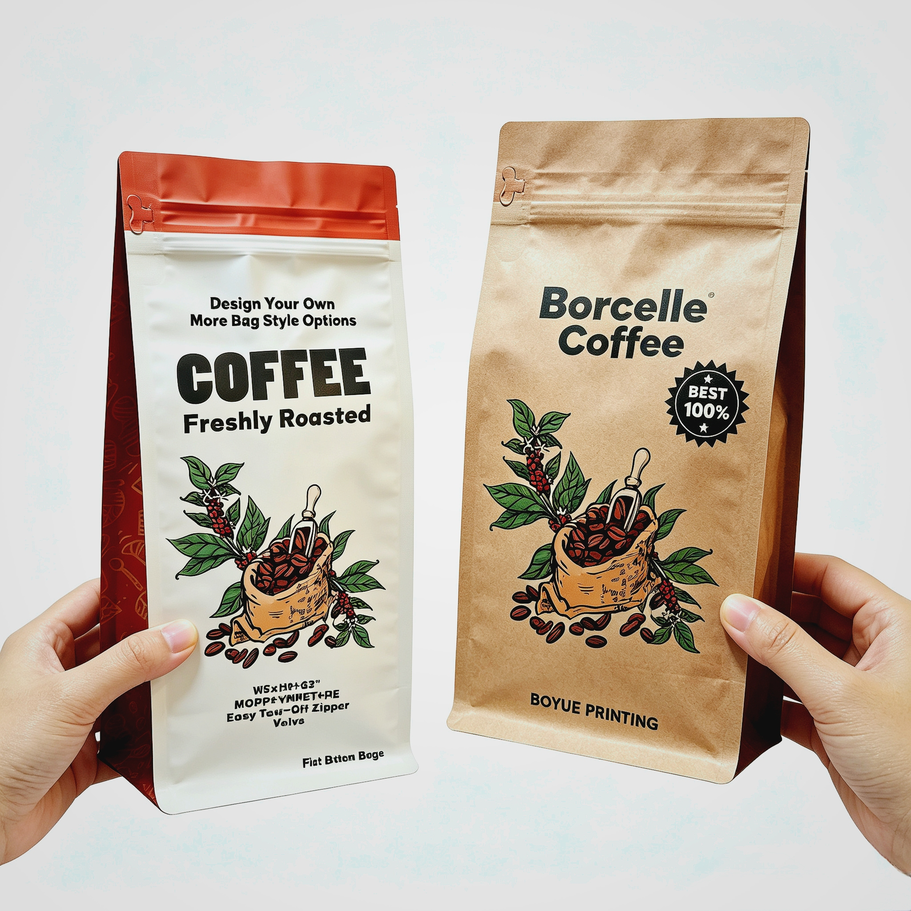

EVOH vs PVOH Coatings: Barrier & Application Differences in Recyclable Mono-Material Packaging

With global packaging regulations accelerating the phase-out of multi-material non-recyclable laminates, mono-material PE/PE and OPP/CPP structures have become the mainstream sustainable solutions for flexible packaging. To compensate for the insufficient inherent barrier properties of pure PE and PP films while retaining full recyclability, EVOH and PVOH functional coatings are widely adopted as high-performance, recyclable barrier upgrades. Although both materials deliver excellent oxygen-blocking capabilities, their humidity adaptability, structural compatibility, and end-use applications differ significantly. This article clarifies their core functions and suitable packaging scenarios for precise material selection.
1. Core Functional Roles in Recyclable Mono-Material Structures
Traditional pure PE/PE and OPP/CPP films feature reliable sealing, flexibility and recyclability but lack effective oxygen and aroma barrier, making them unable to support long-shelf-life products. EVOH and PVOH coatings solve this pain point without introducing non-recyclable foreign layers, fully complying with CEFLEX and global mono-material recycling standards.
PVOH Coating: Cost-Effective Dry Oxygen Barrier for Mono Structures
PVOH (Polyvinyl Alcohol) is a water-based, chlorine-free eco-coating with ultra-low oxygen permeability in dry conditions. It forms a dense hydrogen-bonded film layer on the surface of PE and PP substrates, delivering outstanding oxygen isolation and fragrance retention. Its biggest advantage is simple processing, low cost, and zero impact on the recyclability of PE/PE and OPP/CPP structures.
The key limitation is strong hygroscopicity. In high-humidity environments (RH > 60%), PVOH absorbs moisture, leading to a sharp decline in barrier performance (oxygen transmission rate may increase over 10 times). Thus, it only stably works in dry or low-moisture packaging systems.
EVOH Coating: High-Grade Balanced Barrier for Premium Recyclable Packaging
EVOH (Ethylene Vinyl Alcohol Copolymer) integrates the flexibility of polyethylene and the high barrier property of vinyl alcohol. It provides industry-leading ultra-low oxygen transmission, excellent oil resistance, and aroma locking performance for mono PE/PE and OPP/CPP structures. Compared with PVOH, EVOH maintains far more stable barrier capacity in moderate humidity and features better mechanical strength and heat resistance.
EVOH can be co-extruded or coated into thin functional layers without destroying the mono-material recycling system. It is the preferred barrier material for high-standard recyclable packaging that requires long shelf life and high environmental adaptability.
2. Structural Compatibility: PE/PE vs OPP/CPP
Mono PE/PE Packaging Structure
PVOH-coated PE/PE: Ideal for cost-sensitive dry product packaging. The soft PE substrate matches well with PVOH coating, delivering stable dry barrier performance and low production cost, suitable for large-volume civilian-grade recyclable packaging.
EVOH-modified PE/PE: Adopts thin-layer EVOH co-extrusion coating to upgrade barrier performance. It retains the low-temperature resistance and excellent heat-sealing properties of PE/PE structures, perfect for refrigerated and liquid products that require oxidation resistance and recyclability.
Mono OPP/CPP Packaging Structure
PVOH-coated OPP/CPP: OPP features high transparency and rigidity. PVOH coating enhances oxygen barrier without affecting the film's clarity and printing performance, making it the best match for dry snack packaging with high appearance requirements.
EVOH-modified OPP/CPP: Combines the high rigidity of PP materials and the ultra-high barrier of EVOH. It adapts to high-speed automated packaging lines and resists high-temperature baking and drying processes, applicable for high-end dry goods with strict shelf-life standards.
3. Application Scope Differences by Industry
PVOH-Coated Recyclable Packaging (Dry & Cost-Effective Scenarios)
Food applications: Biscuits, puffed snacks, nuts, dried fruits, dehydrated vegetables, instant noodle seasonings, and all low-moisture baked and dried foods.
Daily necessities: Dry powder personal care products, solid soap packaging, and dry household goods with no moisture ingress risk.
Core advantages: Lowest cost among high-barrier recyclable solutions, eco-friendly and non-toxic, excellent fragrance retention, fully recyclable.
EVOH-Coated Recyclable Packaging (High-Barrier & Complex Scenarios)
Food applications: Chilled prepared meals, retortable foods, high-end condiments, nutraceuticals, low-sugar baked goods, and vacuum-packed fresh ingredients requiring long-term oxidation resistance.
Daily & chemical applications: High-end cosmetic refills, concentrated detergent packaging, and chemical daily necessities sensitive to oxidation and odor deterioration.
Core advantages: Ultra-high oxygen barrier, stable performance in moderate humidity, oil and solvent resistance, longer shelf-life extension, and better process adaptability.
4. Quick Selection Guide & Market Trend
Choose PVOH coating: Dry products, low budget, standard shelf-life requirements, prioritizing recyclability and cost performance.
Choose EVOH coating: Long shelf-life requirements, humid storage environments, oily/oxidation-sensitive contents, and high-end brand positioning.
As global sustainable packaging upgrading accelerates, low-carbon, fully recyclable EVOH and PVOH modified mono-material structures are rapidly replacing traditional PET/AL/PE composite packaging. PVOH undertakes mass-market cost-effective recyclable barrier demands, while EVOH dominates the high-end long-shelf-life recyclable packaging track, forming a complete gradient solution for flexible packaging sustainability.
Learn more about recyclable barrier packaging solutions and customized structural design support on our official website.